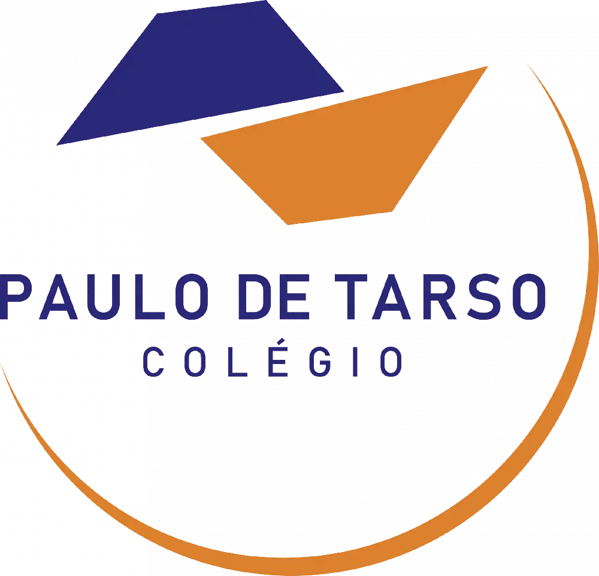

Junte-se a uma comunidade de pessoas apaixonadas por fazer diferença
Quero VoluntariarSomos uma organização dedicada a mobilizar voluntários apaixonados para criar impacto positivo em nossas comunidades. Cada voluntário traz talentos únicos e energia que transformam projetos em realidade.
2026 é o Ano Internacional dos Voluntários para o Desenvolvimento Sustentável. Aqui explicamos como o voluntariado contribui para comunidades mais fortes e metas globais de impacto.
O projeto foca em apoiar famílias em situação de vulnerabilidade social, com ações de inclusão, aprendizado e bem-estar. Vamos atender pessoas que precisam de suporte local e oportunidades de crescimento.
O que vai acontecer: oficinas comunitárias, reforço escolar e mutirões de apoio social.
Local: Rua Mazzini, 61 - Aclimação - São Paulo/SP | CEP: 01528-000
Data: 23 e 24 de Maio de 2026
Como participar: voluntários vão colaborar na organização de atividades, comunicação e atendimento direto às famílias.
Participe de eventos comunitários e campanhas de impacto social. Trabalhe juntos para alcançar objetivos significativos.
Compartilhe seu conhecimento e experiência. Mentore pessoas em desenvolvimento pessoal e profissional.
Use suas habilidades técnicas para melhorar nossos sistemas e processos. Contribua com código ou design.
Ajude na comunicação, atendimento ao público e representação da organização em diferentes canais.